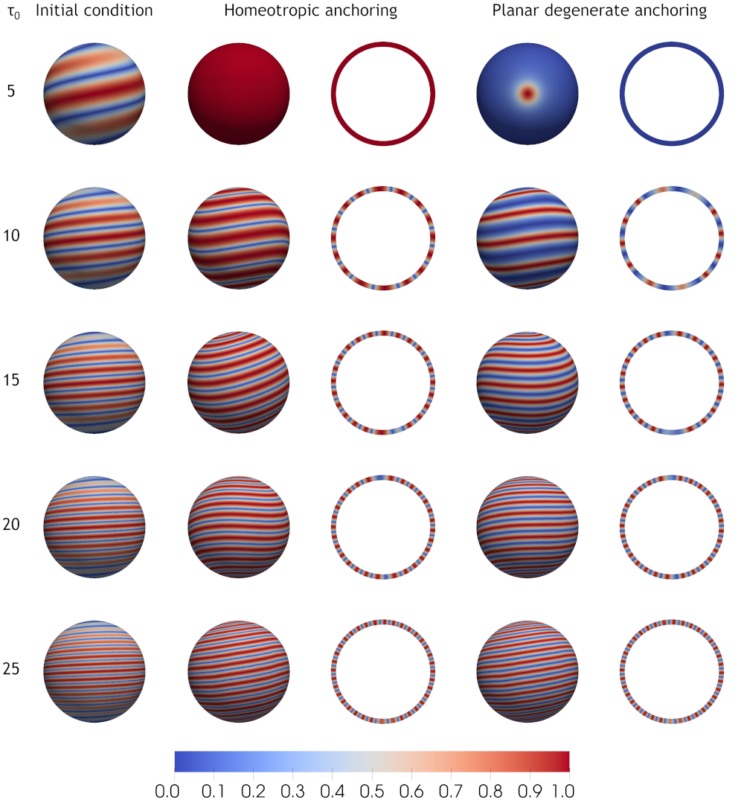

Research
Current research
My current research is on the Landau-de Gennes model of liquid crystals, specifically focusing on "cholesteric shells". Cholesteric shells are hollow shells composed of liquid crystal material, and which exhibit a "twisting" behavior, caused by the structure of the liquid crystal molecules.

Simulation results for a cholesteric shell thickness 0.1. We use twists of 5, 10, 15, 20, and 25.
Since these molecules can be represented by a line field defined by unit vector \(n\), we can color a cholesetric shell with coloring \(|n\cdot\nu|\), where \(\nu=[x,y,z]^T\). This manifests as stripes on the shell which have a period of \(2\pi/\tau_0\), where \(\tau_0\) is the cholesteric twist.
I have studied cholesteric shells under both homeotropic and planar degenerate type weak anchoring schemes. I employed a finite element discretization of the cholesteric problem, using a gradient descent scheme with initial guess \(n=[\cos(\tau_0z),\sin(\tau_0z),0]^T\) for each \(\tau_0\). The results of simulating on a shell with an inner radius of 0.9 and outer radius of 1, are shown on the right.
For more details, see my research statement, my recent preprint accepted for publication, or my PhD thesis in the links below.
Publications
- A. Hicks and Shawn Walker. "Modeling and Simulation of the Cholesteric Landau-de Gennes model". Preprint accepted for publication in Proceedings of the Royal Society A (link).